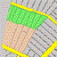

Attribute setzen...
Attribute setzen...
Attribute setzen...
| Mögliche Maßnahmen zur Verringerung des
Hochwasserrisikos im aktuellen Plangebiet |
|
Rückhaltebecken einfügen... Attribute setzen... |
|
| Mulden-Rigolen erstellen.. Attribute setzen... |
|
|  |
Entsiegelung einfügen... Attribute setzen... |
| alle speichern.. |